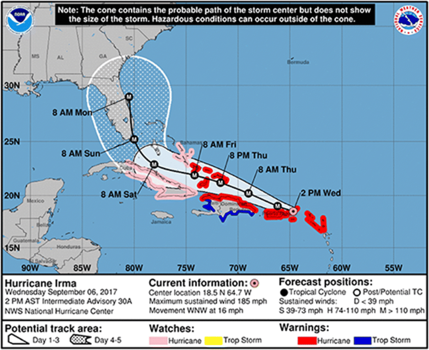
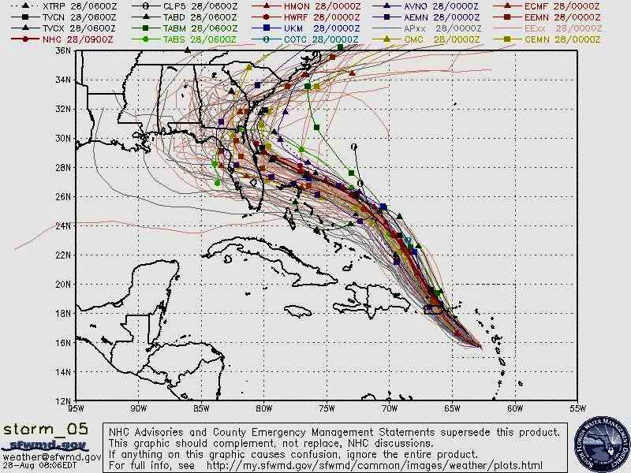
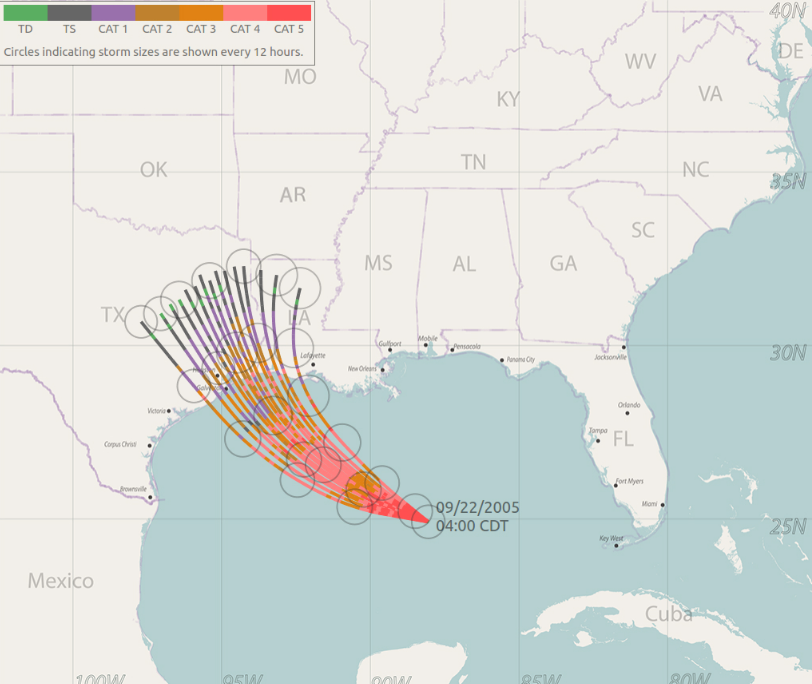
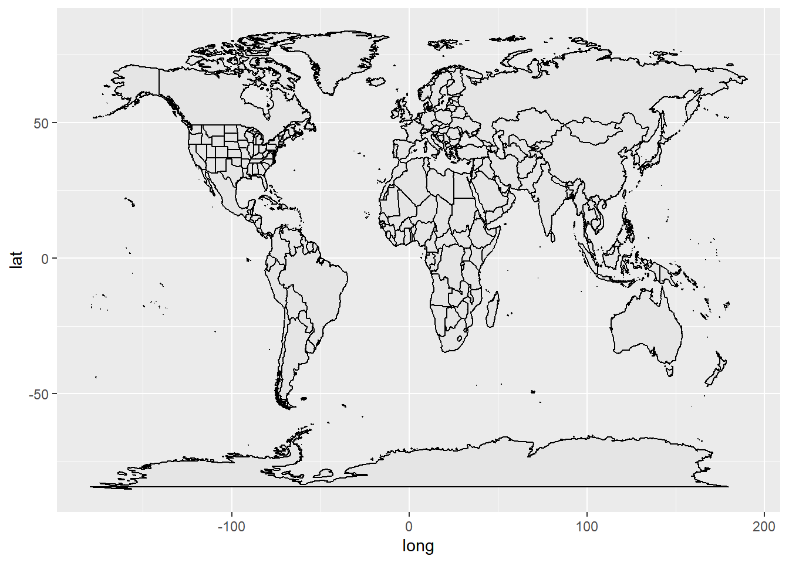
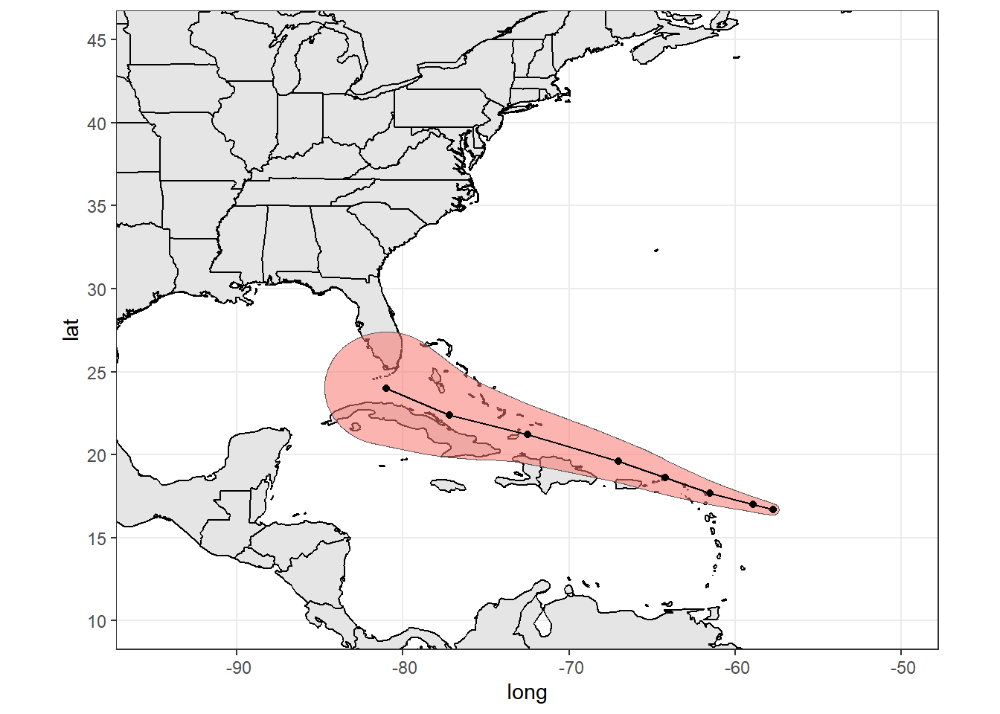
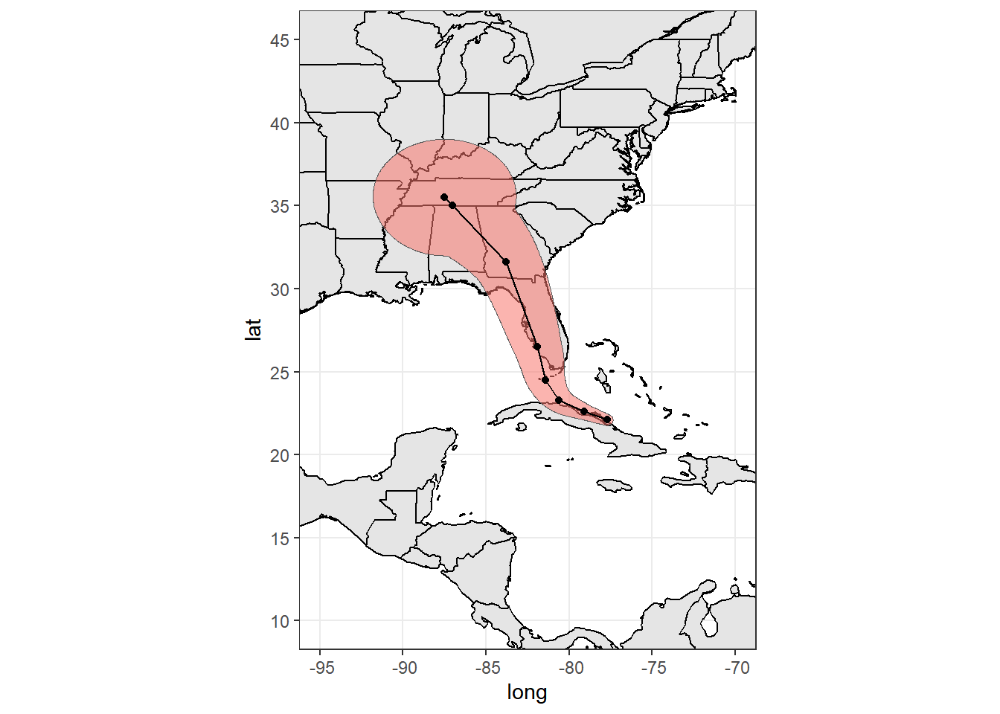
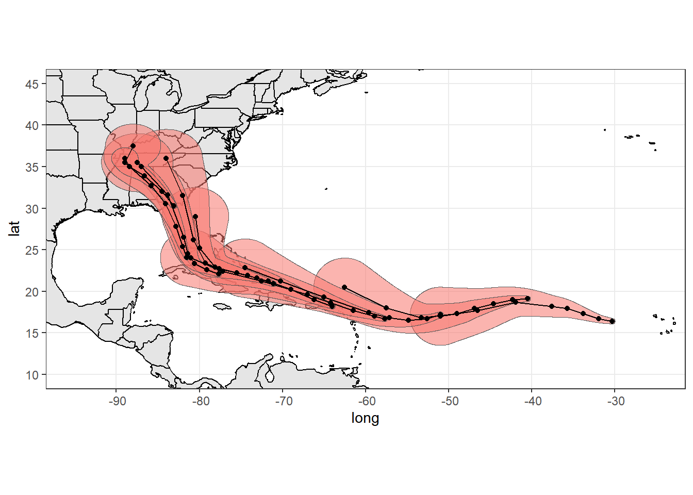
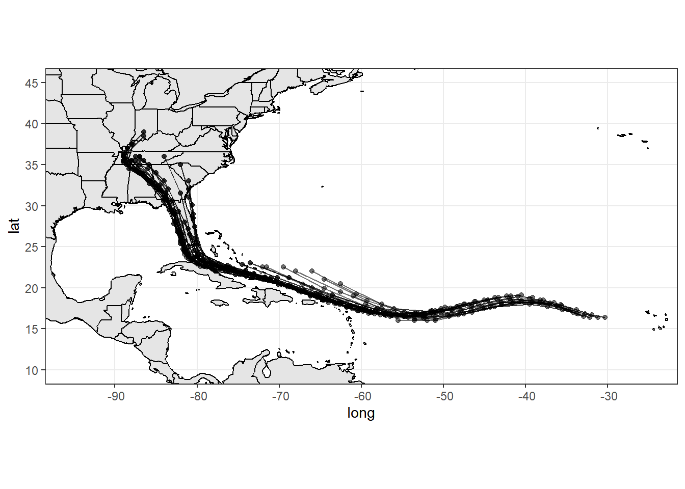
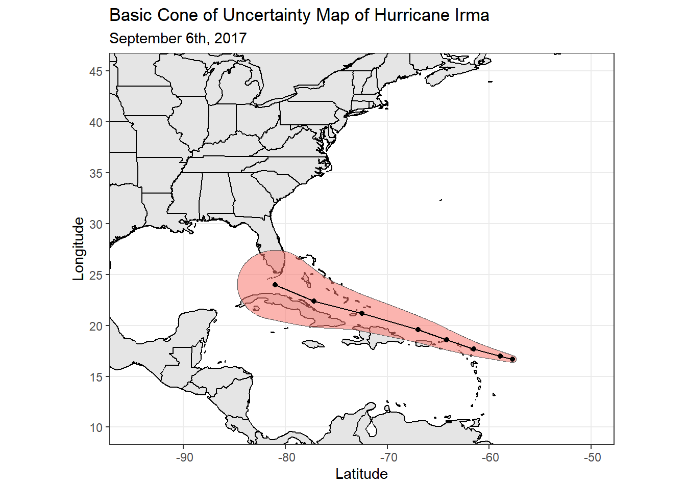

How to Communicate Hurricane Forecast Uncertainty in Different Ways
Introduction
Natural hazards such as hurricanes, floods, volcanic eruptions, and earthquakes have the potential to impact large populations, making effective mass communication a critical component of disaster preparedness and response. They can cause panic and fear, and people in hurricane-prone areas want to know as much as they can about them when they happen. Hurricanes present a unique challenge due to the inherent uncertainty in their formation, movement, and impact. Forecasting efforts, particularly in the United States, rely on probabilistic models to estimate storm paths, intensity, and associated hazards such as wind damage and storm surges. Administrations like the National Weather Service and the National Ocean and Atmospheric Administration release hazard maps that indicate different levels of information such as cone of uncertainty maps and spaghetti plots. Even with alternative representations, there are many challenges that remain to ensure that the public understands the full scope of hurricane impacts beyond just the predicted track.
What is Hurricane Forecast Uncertainty?
Uncertainty, at its core, refers to anything that is not certain. However, its interpretation varies by discipline. Scientists often view uncertainty as any form of unpredictability, whether it is quantifiable or not.
To better structure uncertainty, many frameworks categorize it into three main types:
Aleatory Uncertainty (Randomness in Nature) –
This refers to inherent unpredictability due to natural variability, such as a coin flip or the path of a hurricane.
It is expressed through probabilities and statistical distributions.
Epistemic Uncertainty (Knowledge Gaps in Modeling) –
This arises from limitations in data, models, and assumptions.
It reflects an incomplete understanding of a system
Can also be expressed through probability distributions, confidence intervals, or alternative scenarios
Ontological Uncertainty (Limits of the Modeling Process) –
This represents uncertainty about the entire modeling framework itself.
It refers to uncertainties stemming from things we are not aware of, leading to errors in models that are not noticed
More challenging to convey, often requires qualitative confidence assessments
Aleatory uncertainty arises from the natural randomness of hurricane behavior, such as variations in track, intensity, wind speeds, and landfall location.
Epistemic uncertainty stems from knowledge gaps in atmospheric science and forecasting models, including limitations in data collection and model assumptions.
Lastly, ontological uncertainty reflects the fundamental limitations of our modeling approaches—some aspects of hurricane behavior may be unpredictable or beyond the scope of current scientific understanding.
Understanding the different types of uncertainty associated with hurricanes is essential for improving both forecasting and public response.
@spiegelhalterRiskUncertaintyCommunication2017
What Makes a Graphic Good?
Of course, you want to follow some core basics:
Choose easy to read colors
Have clear labels and legends
Don’t add complex shapes or unnecessary chart
When making a grahic to communicate uncertainty, assume that people have low numeracy and accommodate your visualization to fit their needs. This means adopting a less is more approach. Having too much information on one visualization is not a good idea. Consider taking that information and making multiple graphics to complement each other. For hurricanes, we have many types of hazard maps: wind maps, flood maps, surge maps. If all the information of these maps were combined with a cone of uncertainty map or spaghetti plot, things could get to painful to look at.
A good way to check you are making a good graphic is that it follows what you want to communicate and achieves it well. Studying your map for all the possible ways it may be misunderstood, avoiding chart junk, and aiming for a balanced level of simplicity and complexity. @spiegelhalterRiskUncertaintyCommunication2017
Structure of this User Guide
This user guide aims to clarify these types of uncertainty and their implications for hurricane forecasting and risk communication. By improving our understanding of uncertainty, we can enhance public awareness, emergency response strategies, and the effectiveness of hazard communication tools.
Comparing the Strengths and Weaknesses of Different Hurricane Graphics
Cone of Uncertainty Maps
A key tool in hurricane communication is the National Hurricane Center’s (NHC) cone of uncertainty, which represents the likely path of a tropical cyclone based on historical forecast errors. In media, the cone is presented in a wide variety of formats, sometimes without the central path.
A strength of the cone is that it is designed to show where the center of the storm will remain. The cone is based on past performances of recent hurricanes, it predicts that the eye of the storm will stay in the cone 60-70% of the time. However this is kind of where the strengths of the cone of uncertainty.
People are very uncertain about the cone of uncertainty. Public interpretation of this visualization is often flawed. People do not do well with complex graphs, that cone may appear to be the categorical danger zone of the storm. They may trust the central path too much. The size of the hurricane is not really stated or implied and people may get confused on just where we can really expect damage if the hurricane stays on the line or straws away from it.

Figure 1. Cone of Uncertainty Map of Hurricane Irma : We can be 60-70% sure the hurricane will stay within the cone. This map also shows the expected wind speeds at the eye and places that are put under hurricane and tropical storm warnings and watches. It does fail to capture the size of the hurricane and what areas would be affected had a hurricane cross their path.
Spaghetti Plots / Ensemble Lines
Spaghetti plots showing possible paths of the hurricane have also been tried to communicate hurricane risk. They are the visualization of the eye path of a hurricane using multiple algorithms to determine where the algorithms agree the hurricane will travel. There will a packly dense area of lines and a lot of wild lines that seem to be traveling to places unexpected.
The biggest weakness of a spaghetti plot is they can be really complex. Confusion comes when looking where a line strikes a state. If it city is overlapped with a line, does that mean it is more likely to be hit than the city next to with no line overlapping it? No. But people can misunderstand these maps to be like that. Look at Figure 2 which showcases a spaghetti plot of Hurricane Dorian. At the time, President Trump declared on twitter that one of the states that will be hit will be Alabama with Figure 2 supporting his claim. The National Weather Service (NWS) in Birmingham had to announce on twitter that “Alabama will NOT see any impacts from Dorian.” In the end, Alabama did not see any impact, but we are left with a confusing map that can be easily misinterpreted.

Figure 2. Hurricane Dorian Spaghetti Plot: This plot is very messy and intimidating for those that do not know how to read it. It even states that if this chart causes confusion, please it ignore it. Essentially, you want to look where the lines are most dense as that is where the hurricane is most likely to travel. Even if a state like Alabama has lines crossing the borders, because it is far way from the dense area of lines, it is very unlikely that the hurricane will even cross or enter Alabama.
More recently, researchers like Lace Padilla are studying how to reduce misinterpretation and minimize uncertainty in hurricane maps. Using data from Hurricane Rita, in Figure 3, an example of a good spaghetti plot she published is one that keeps the lines in the most dense zone, simplifies them, and adds a circle along the lines to represent the size of the hurricane. It complements the strengths and weaknesses of a spaghetti plot. @padillaPowerfulInfluenceMarks2020@liu2019

Figure 3. Hurricane Rita Spaghetti Plot: This was the best model Researcher Lace Padilla came up with that minimized confusion, but did not eliminate it. It is very informative, it shows the expected hurricane category and size as the lines go on. The confusion from the extra lines is erased, but as a result, some new confusion can be brought as people may think the hurricane will not stray out away from a line.
Making Hurricane Maps in R
A hazard map will never be 100% certain, but there are ways to balance both simplicity and complexity to minimize misinterpretation so that the general public can better understand what the map is trying to convey.
This user guide assumes you have the data neccessary to create these maps. If you need data, the appendix has a script that downloads data from a webstie. If you modify the script to fit your needs, you can download data from the databases you need.
Some basic knowledge of the ‘ggplot2’ package is also assumed. To code these spatial datasets, I will be using the geom_sf() function in the ‘ggplot2’ package.
Here are the libraries necessary needed for this process. (NOTE: Other libraries will be needed if loading in data from a website, they are listed in the chunked they are used in below as well as the Appendix)
library(sf) # for working with spatial data
Linking to GEOS 3.13.0, GDAL 3.10.1, PROJ 9.5.1; sf_use_s2() is TRUE
library(tidyverse) # Data Wrangling and Cleaning
Warning: package 'tibble' was built under R version 4.4.3
Warning: package 'purrr' was built under R version 4.4.3
Warning: package 'stringr' was built under R version 4.4.3
── Conflicts ────────────────────────────────────────── tidyverse_conflicts() ──
✖ dplyr::filter() masks stats::filter()
✖ dplyr::lag() masks stats::lag()
ℹ Use the conflicted package (<http://conflicted.r-lib.org/>) to force all conflicts to become errors
library(ggplot2) # for basic mapslibrary(mapdata) # for the the world map we'll use with ggplot()
Warning: package 'mapdata' was built under R version 4.4.3
Loading required package: maps
Warning: package 'maps' was built under R version 4.4.3
Attaching package: 'maps'
The following object is masked from 'package:purrr':
map
library(mapview) # for interactive maps
Warning: package 'mapview' was built under R version 4.4.3
library(maps)
For the world map in ggplot(), we’ll need this. The latter code will outline the states so we can see for sure what states are affected. We will adjust the axis later.
world <-map_data("world")states <-map_data('state')ggplot() +geom_polygon(data = world, aes(x = long, y = lat, group = group), fill ="gray90", color ="black") +geom_polygon(data = states, aes(x = long, y = lat, group = group), fill ="gray90", color ="black")

Now I can load in my code. As mentioned before please see the appendix if you need to download code from a website.
library(rvest)
Warning: package 'rvest' was built under R version 4.4.3
Attaching package: 'rvest'
The following object is masked from 'package:readr':
guess_encoding
url <-"https://www.nhc.noaa.gov/gis/archive_forecast_results.php?id=al11&year=2017&name=Hurricane%20IRMA"html <-read_html(url)links <-html_nodes(html, ".content a")kmz_links <-sapply(links, html_attr, name ="href")kmz_links <- kmz_links[grepl("kmz$", kmz_links)]library(purrr)library(tibble)library(dplyr)library(tidyr)library(stringr)# Create a data frame that has everythingstorm_tracks <-tibble(link = kmz_links,storm =str_extract(link, "[A-Z\\d]{8}"),time =str_extract(link, "_[\\dAadv]{6,7}"),type =str_extract(link, "CONE|TRACK|WW"),filename =str_remove(link, "../storm_graphics/api")) |>mutate(url =paste0("https://www.nhc.noaa.gov/gis/", link),filename =paste0("data", filename))storm_tracks <- storm_tracks |>mutate(filename =gsub("\\.kmz$", ".kml", filename))
In this step, I read every file in the storm_tracks dataframe I created from before by telling ‘mutate()’ to make a new column called data, where I want to read the kml files, which contain spatial data using st_read(). ‘st_read()’ is a function used to read spatial data, so here that is done to every file in the storm_tracks dataframe.
# Read the files in as sub-data-frames# Access each data frame using storm_tracks$data[[i]]library(sf)storm_tracks <- storm_tracks |>mutate(data = purrr::map(filename, st_read))st_read('data/AL112017_001adv_CONE.kml')
Here is just some basic data wrangling to get the cones and tracks geometry data into two separate dataframes.
# Data Cleaning and Filtering# Conescones <-filter(storm_tracks, type =="CONE") %>%rename(storm = storm) |>unnest("data")# Trackstracks <-filter(storm_tracks, type =="TRACK") %>%rename(storm_code = storm) |>unnest("data")
The Cone of Uncertainty
We’ll be looking at only a few cones from the dataset here. Specifically 9 where they are each around 1-3 days apart. I’ve filtered out all the observations in the tracks dataset that do not match with the times I have in the cone observations I want to look at. That way, the tracks will show the central path of their respective cones.
cone10 <- cones %>%slice(seq(1, n(), by =10))# keeping all observations in track that have values in the time column that match with my filtered cones datasettrack10 <-semi_join(tracks, cone10, by ='time')
Here are two basic cone of uncertainty maps. In each, I’ve added the central line path.
# The 4th Row will be Map 1cone1 <- cone10 %>%filter(row_number() ==4)# Keeping only the same tracks that match with the 4th Row's time valuetrack1 <-semi_join(track10, cone1, by ='time')# The 7th Row will be Map 2cone2 <- cone10 %>%filter(row_number() ==7)# Keeping only the same tracks that match with the 7th Row's time valuetrack2 <-semi_join(track10, cone2, by ='time')# Map 1ggplot(world) +geom_polygon(data = world, aes(x = long, y = lat, group = group), fill ="gray90", color ="black") +geom_polygon(data = states, aes(x = long, y = lat, group = group), fill ="gray90", color ="black") +theme_bw() +geom_sf(aes(geometry = geometry, fill ='red', alpha =0.5), show.legend =FALSE, data = cone1) +geom_sf(aes(geometry = geometry), show.legend =FALSE, data = track1) +coord_sf(xlim =c(-95, -50), ylim =c(10, 45))

# Map 2ggplot(world) +geom_polygon(data = world, aes(x = long, y = lat, group = group), fill ="gray90", color ="black") +geom_polygon(data = states, aes(x = long, y = lat, group = group), fill ="gray90", color ="black") +theme_bw() +geom_sf(aes(geometry = geometry, fill ='red', alpha =0.5), show.legend =FALSE, data = cone2) +geom_sf(aes(geometry = geometry), show.legend =FALSE, data = track2) +coord_sf(xlim =c(-95, -70), ylim =c(10, 45))

This last map just compare the 9 observations filtered out to see the cone evolve over time.
ggplot(world) +geom_polygon(data = world, aes(x = long, y = lat, group = group), fill ="gray90", color ="black") +geom_polygon(data = states, aes(x = long, y = lat, group = group), fill ="gray90", color ="black") +theme_bw() +geom_sf(aes(geometry = geometry, fill ='red', alpha =0.5), show.legend =FALSE, data = cone10) +geom_sf(aes(geometry = geometry), show.legend =FALSE, data = track10) +coord_sf(xlim =c(-95, -25), ylim =c(10, 45))

Spaghetti Plots
NOTICE: In my example, there is one problem with my spaghetti plot and that is that plot only uses data from one algorithm, whereas in normal spaghetti plots, they use data from multiple models and sources to show where each model seems to agree the hurricane will go as the most likely.
With that out of the way, it is important to that this isn’t a ‘true’ spaghetti plot, but this code can be modified to with an extra geom_sf() to include data from other sources. You would do this by filtering or joinging your datasets by time or date and that way your lines would all be from the same date.
In my example however, I am just taking the expected paths from one model and plotting them. This is just a basic plot made given with the data at hand.
ggplot(world) +geom_polygon(data = world, aes(x = long, y = lat, group = group), fill ="gray90", color ="black") +geom_polygon(data = states, aes(x = long, y = lat, group = group), fill ="gray90", color ="black") +theme_bw() +geom_sf(aes(geometry = geometry, alpha =0.00001), show.legend =FALSE, data = tracks) +coord_sf(xlim =c(-95, -25), ylim =c(10, 45))

From the map above, we can see the path the hurricane took by looking at where the lines are most dense. Again as noticed at the beginning of this section, I am only using data from one model, whereas normal spaghetti plots use data from multiple which creates a lot of expected paths, some where models agree and others where models do not agree.
Help With Spatial Data
In my experience, the ‘sf’ package is very helpful and is what I used to work with spatial data. I listed below a helpful guide I used to help me work and plot spatial data.
Labels can be added to show information needed about the maps.
ggplot(world) +geom_polygon(data = world, aes(x = long, y = lat, group = group), fill ="gray90", color ="black") +geom_polygon(data = states, aes(x = long, y = lat, group = group), fill ="gray90", color ="black") +theme_bw() +geom_sf(aes(geometry = geometry, fill ='red', alpha =0.5), show.legend =FALSE, data = cone1) +geom_sf(aes(geometry = geometry), show.legend =FALSE, data = track1) +coord_sf(xlim =c(-95, -50), ylim =c(10, 45)) +labs(title ='Basic Cone of Uncertainty Map of Hurricane Irma', subtitle ='September 6th, 2017',x ='Latitude', y ='Longitude')

References
Liu, Le, Lace Padilla, Sarah H. Creem-Regehr, and Donald H. House. 2019. “Visualizing Uncertain Tropical Cyclone Predictions Using Representative Samples from Ensembles of Forecast Tracks.” IEEE Transactions on Visualization and Computer Graphics 25 (1): 882–91. https://doi.org/10.1109/TVCG.2018.2865193.
Padilla, Lace M. K., Sarah H. Creem-Regehr, and William Thompson. 2020. “The Powerful Influence of Marks: Visual and Knowledge-Driven Processing in Hurricane Track Displays.” Journal of Experimental Psychology: Applied 26 (1): 1–15. https://doi.org/10.1037/xap0000245.
Spiegelhalter, David. 2017. “Risk and Uncertainty Communication.” Annual Review of Statistics and Its Application 4 (1): 31–60. https://doi.org/10.1146/annurev-statistics-010814-020148.
“Visualise SF Objects - CoordSf.” - CoordSf • Ggplot2, ggplot2.tidyverse.org/reference/ggsf.html.
Appendix
Libraries Used in This User Guide
library(sf) # for working with spatial datalibrary(tidyverse) # Data Wrangling and Cleaning library(ggplot2) # for basic mapslibrary(mapdata) # for the the world map we'll use with ggplot()library(mapview) # for interactive maps library(maps)
In my example, I sourced my data from the National Ocean and Atmospheric Association (NOAA). In their hurricanes database, I wanted the predicted forecasts to make my cone of uncertainty and spaghetti plots. Here is the code I ran, that can be modified to fit your needs.
library(rvest)url <-"https://www.nhc.noaa.gov/gis/archive_forecast_results.php?id=al11&year=2017&name=Hurricane%20IRMA"html <-read_html(url)links <-html_nodes(html, ".content a")kmz_links <-sapply(links, html_attr, name ="href")kmz_links <- kmz_links[grepl("kmz$", kmz_links)]library(purrr)library(tibble)library(dplyr)library(tidyr)library(stringr)# Create a data frame that has everythingstorm_tracks <-tibble(link = kmz_links,storm =str_extract(link, "[A-Z\\d]{8}"),time =str_extract(link, "_[\\dAadv]{6,7}"),type =str_extract(link, "CONE|TRACK|WW"),filename =str_remove(link, "../storm_graphics/api")) |>mutate(url =paste0("https://www.nhc.noaa.gov/gis/", link),filename =paste0("data", filename))
The following code will download all the data into your files. Running this code may take a long time, so I have commented it out. When modifying the code, please comment out only the first #, as there are explanations inside this code chunk.
# # Download the files in the data directory# dir.create("data") #Create a new folder called "data"# # This will download all the selected data from your database# purrr::walk2(storm_tracks$url, # storm_tracks$filename, # ~download.file(.x, destfile = .y, mode = "wb")# # It is common that the files may needed to be extracted from a zip folder# purrr::walk(storm_tracks$filename, ~unzip(., exdir = "data"))# # This will deleted the zipped folders, leaving you with only the unzipped folders# unlink("data/*.kmz")
storm_tracks <- storm_tracks |>mutate(filename =gsub("\\.kmz$", ".kml", filename))# Read the files in as sub-data-frames# Access each data frame using storm_tracks$data[[i]]library(sf)storm_tracks <- storm_tracks |>mutate(data = purrr::map(filename, st_read))
The last bit of code is just for some organization. It filters out all the cone and track data. Depending on how your database orders their data and files, you can modify this as well. Or some data cleaning will be needed on your end.
# Conescones <-filter(storm_tracks, type =="CONE") %>%rename(storm = storm) |>unnest("data")# Trackstracks <-filter(storm_tracks, type =="TRACK") %>%rename(storm_code = storm) |>unnest("data")